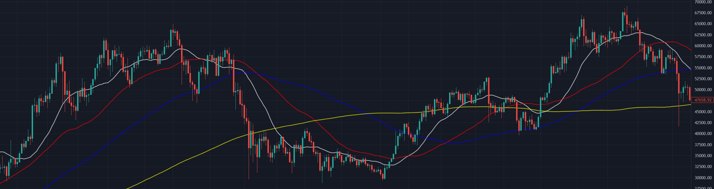

%3Amax_bytes(150000)%3Astrip_icc()%2FUnderstandingBasicCandlestickCharts-01_2-7114a9af472f4a2cb5cbe4878c1767da.png&f=1&nofb=1&ipt=5f27179d81be2aed9ed73843fc1abdf897ad397b90c9861d195da2576613a93f&ipo=images)
What is Technical Analysis(TA)?
Technical Analysis is a method that is used to predict the probable future price movement of a stock or currency pair. In any kinds of trading, a wise trader should have an entry and exit strategy. Being able to understand price charts, more specifically, candlestick charts and using technical indicators can help you make better decisions on when to place a trade, when to exit a trade and when to stay away from the market (no trade is also a trade).

Candlestick Chart
(Candlestick Charts, brief information and a video that can teach people. Img/vid on the right side.) Candlestick charts are commonly used by traders to determine the possible price movements based on previous price actions and patterns. It's useful because it shows four price points: open, close, high and low throughout the period of time in which the trader selects (example: 1 day, 4hour, 5 min chart. A single bar represents the time selected)